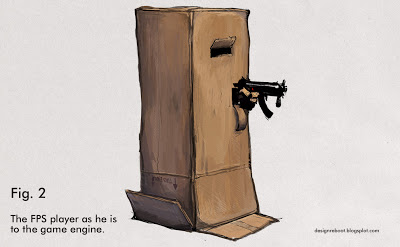

If you haven’t seen Jay Benson’s fan-made trailer of Half Life, then do so via the link below. I found it fairly inspiring in regard to how the Half Life franchise could be more visually immersive; granted it doesn’t become to scripted via cue of arm/hand use. Nonetheless something like that probably could only be added as optional added code well after release of the mod, but just throwing it out there anyways as food for thought.
Apparently bobbing and jerking is the new standard in realism. That looked terrible.
Also, what exactly are you asking for? The thread title seem to contradict its contents. Transparent limbs are the norm in half-life games, and that won’t be changing.
Well technically his arms aren’t transparent but it’s the standard of most First Person Shooters to not show the legs, at least most of the FPS I’ve played.
It is jerky but I think that was what he was going for. Its not supposed to be totally realistic, I think he was trying to make it slightly cartoony. I thought it was great.
video wasn’t made in a valve engine, it’s valve models imported in 3ds max
I don’t see how that’s relevant.
I would like to see more transparent limbs in the next half life, as far as using buttons, turning valves, maybe climbing ladders, and especially driving goes. But for Black Mesa, they should keep it in line with Half-Life 2’s style.
It annoys the hell out of me when I see most head-bobbing in games. It’s can be disorienting, it throws off your aim & looks even worse when looking up or down.
People reflexively counter most of the effects of their head & eye movement when moving. Birds are even better at it.
Head bobbing is lame, I’m more concerned about the way the gun tracks when you look around. In HL2 it has that nice little drag, and it goes in and out of your FOV the more you look up or down.
the main problem with the video is that it can’t actually be implemented into a game without turning it into heavy rain or some other bs
Mirror’s Edge-style body awareness would be cool tho.
I actually wasn’t referring to the head bob as much, but more to the animations. All the animations for doors, machines, etc are really jerky and overexaggerated. (Look at the loader. LOOK AT IT.)
Yeah, the loader & the AMS jiggly & organic-looking for anything mechanical, while the doors move all too fast, but my point still stands about the head movement.
VALVe may be claiming that they don’t show arms and legs in order to help the impression that YOU are the hero, but that’s, sorry folks, PR bullshit.
The real reason is the fact that the player character is a cylinder float through the world, and it can stand on any ledge, no matter how narrow, if at least “1 pixel” of the cylinder’s base is on that ledge.
Should you ever add visible feet to the character, you’d immediately see the visual implausibility of the game – since legs are narrower than body, the player would frequently levitate next to a ledge (the cliff in Half-Life 1 where you shoot down the helicopter is a prime example of these narrow ledges).
In Mirror’s Edge, you’re forced to put your back against a wall before you can traverse a ledge. That’s OK if you are unarmed athlete who tries to avoid combat, but Half-Life is NOT that kind of game. In HL, you’re a warrior (albeit with PhD), armed to the teeth, and you need to be able to shoot almost any time, even on ladders etc.
It’s just a no-go in current style of the game.
While sitting in a car, Gordon is able to turn his body all the way around; how would you do that if he actually had shoulders, spine, pelvis and legs?
Etc. etc.
Really? Cause Valve didn’t mind placing legs in Left 4 Dead, a game that doesn’t try to make the player believe they are the hero and the only game that has cutscenes outside the view of the player and the only game that makes the player speak. And it doesn’t make the game seem implausible even when stepping up to ledges. It just re-affirms that you are that character. Restricting player camera movement in a vehicle would take them no time at all to program into the game if they felt it were necessary.
another reason is that it’s just stupid except in certain types of games
Well, it’s not a cylinder, it’s a rectangular box. To make matters worse it doesn’t even rotate with the player camera & they’re usually so much larger than what seems necessary. I always end up reminded of these pictures when talking about it:

It doesn’t even work well in Mirrors Edge because you can still stand on the corner of a brush & have both of the player’s feet floating in the air without falling.
What really gets me is that so much work was put into the vehicle physics that was only used in a few maps in Half-Life 2, yet the player physics was more or less cut & pasted from the first game. When I first saw the Euphoria physics engine I wondered how long before a first-person game actually implemented it for the player physics & I’m still waiting. At the very least I wish some moders would do something like the Ragmorph Gmod Addon.
We need this kind of animation in BM.
Speak for yourself.
But I wanna be a cuboctahedron!
Yep.
Nope.